Ans: \(11 \frac{7}{10}\)
- (c)\(15 \frac{6}{10} \frac{4}{100} + 14 \frac{3}{10} \frac{6}{100}\)
Ans: 30
- (d)\(7 \frac{7}{100} - 4 \frac{4}{100}\)
Ans: \(3 \frac{3}{100}\)
- (e)\(8 \frac{6}{100} - 5 \frac{3}{100}\)
Ans: \(3 \frac{3}{100}\)
- (f)\(12 \frac{6}{10} \frac{2}{100} - \frac{9}{10} \frac{9}{100}\)
Ans: \(11 \frac{63}{100}\)
Page No. 63
Make a place value table similar to the one above. Write each quantity in decimal form and in terms of place value, and read the number:
Ans:
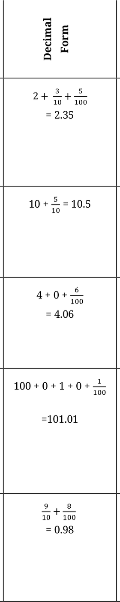
Question
2 ones, \(3 - - 2 3 5 -\) Two point tenths and 5 three five (or
a hundredths two and
1 ten and \(5 - 1 - 5 - -\) Ten point tenths five (or ten b and five tenths)
4 ones and \(- - 4 - 6 -\) Four point 6 zero six (or c hundredths four and six
1 hundred, \(1 - 1 - 1 -\) One hundred 1 one and 1 one point hundredth zero one (or d one hundred one and one hundredth)
\(\frac{8}{100}\) and \(\frac{9}{10} - - - 9 8 -\) Zero point
e (or ninety-
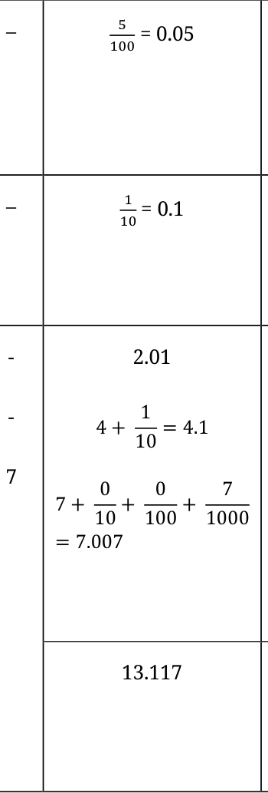
\(\frac{5}{100}\)
\(- - - 5 -\) Zero point
zero five (or f five hundredths)
\(- - - 1 - -\) Zero point
\(\frac{1}{10}\)
g one (or one tenth)
\(2 \frac{1}{10}\) , \(4 \frac{1}{10}\) , \(- 2 0 1 -\) zero one and \(7 \frac{7}{1000} 4 1 - -\) and
Four point \(h 7 - -\) one and Seven point zero zero seven
Page No. 64
Write these quantities in decimal form:
- (a)234 hundredths
Ans: 2.34
- (b)105 tenths.
Ans: 10.5
Fill in the blanks below (mm \(< - >\) cm)
Ans:
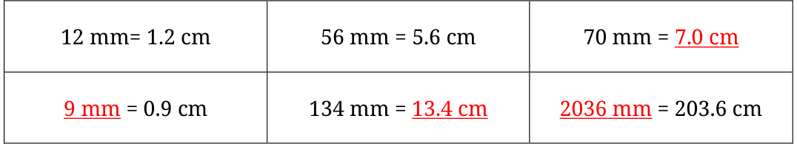
Page No. 66
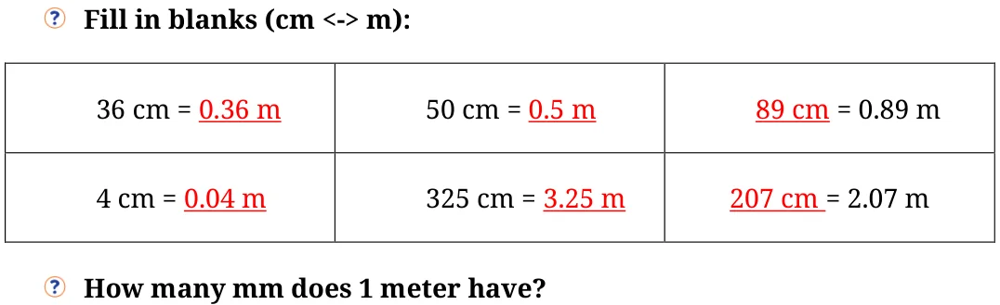
Ans: \(1m = 1000\) mm
Can we write 1 mm \(= \frac{𝟏}{𝟏𝟎𝟎𝟎} m\)? Ans: Yes
Page No. 68
Fill in the blanks below (g \(< - >\) kg)
Ans:
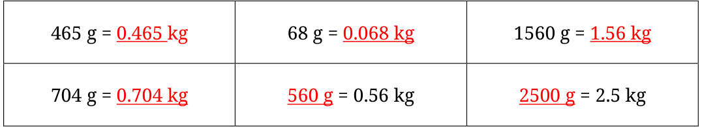
Page No. 69
Fill in the blanks below (rupee \(< - >\) paise)
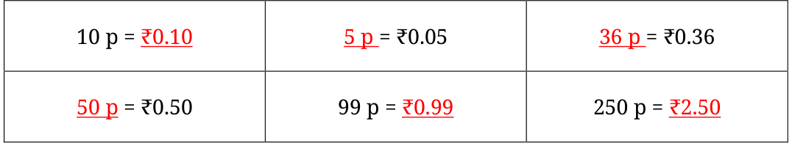
Page No. 70
Name all the divisions between 1 and 1.1 on the number line.
Ans: The small divisions between 1 and 1.1 on the number line (if the sub-
division is of 10 parts) are: 1.01, 1.02, 1.03, 1.04, 1.05, 1.06, 1.07, 1.08, 1.09
Identify and write the decimal numbers against the letters.
Ans:
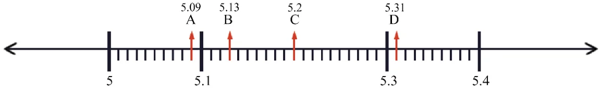
Page No. 71
Can you tell which of these is the smallest and which is the largest?
Ans:
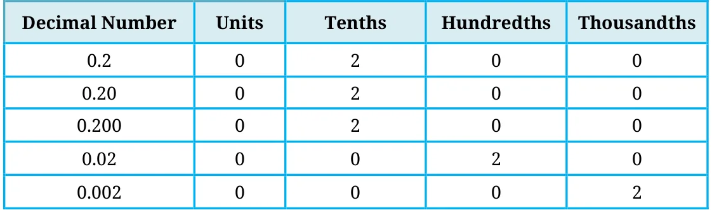
\(0.2 = 0.20 = 0.200\) is the largest.
0.002 is the smallest.
Which of these are the same: 4.5, 4.05, 0.405, 4.050, 4.50, 4.005, 04.50?
Ans: 4.5, 4.50, and 04.50 are equal. 4.05 and 4.050 are equal.
Identify the decimal number in the last number line in Figure (b) denoted by ‘?’ Ans:
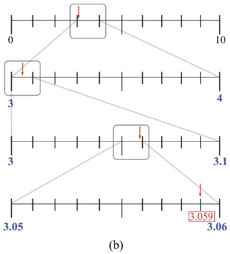
Make such number lines for the decimal numbers: (a) 9.876 (b) 0.407.
Ans: (a)
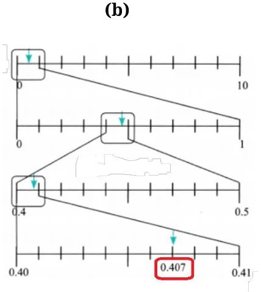
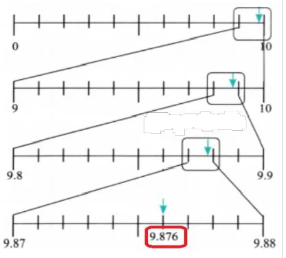
In the number line shown below, what decimal numbers do the boxes labelled ‘a’, ‘b’, and ‘c’ denote?
Ans:
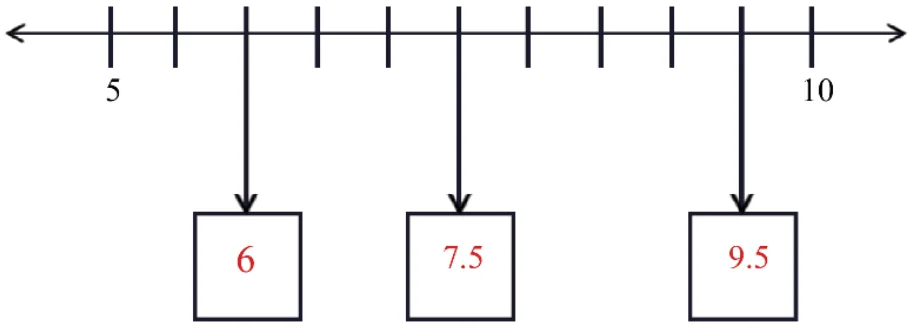
Page No. 72
Using similar reasoning find out the decimal numbers in the boxes below. Ans:
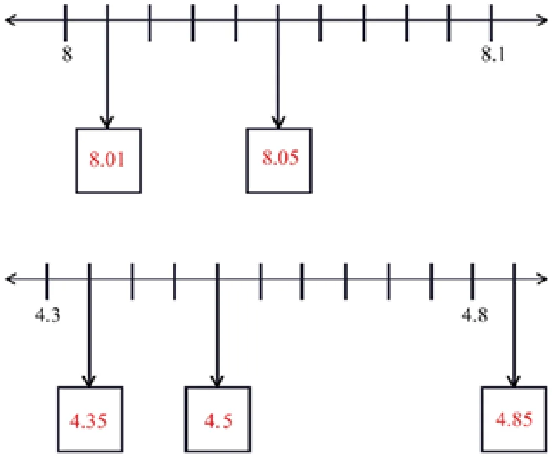
Page No. 73
Which decimal number is greater?
- (a)1.23 or 1.32 (b) 3.81 or 13.800 (c) 1.009 or 1.090
Ans:
- (a)1.32 is larger.
- (b)13.800 is larger.
- (c)1.090 is larger.
Consider the decimal numbers 0.9, 1.1, 1.01 and 1.11 Which of the above is closest to 1.09?
Ans: 1.1 is closest to 1.09.
Which among these is closest to 4: 3.56, 3.65, 3.099?
Ans: 3.65 is closest to 4.
Which among these is closest to 1: 0.8, 0.69, 1.08?
Ans: 1.08 is closest to 1.
In each case below use the digits 4, 1, 8, 2, and 5 exactly once and try to make a decimal number as close as possible to 25.
Ans:

Page No. 75 Figure it Out
- 1.Find the sums
- (a)\(5.3 + 2.6\) (b) \(18 + 8.8\)
- (c)\(2.15 + 5.26\) (d) \(9.01 + 9.10\)
- (e)\(29.19 + 9.91\) (f) \(0.934 + 0.6\)
- (g)\(0.75 + 0.03\) (h) \(6.236 + 0.487\)